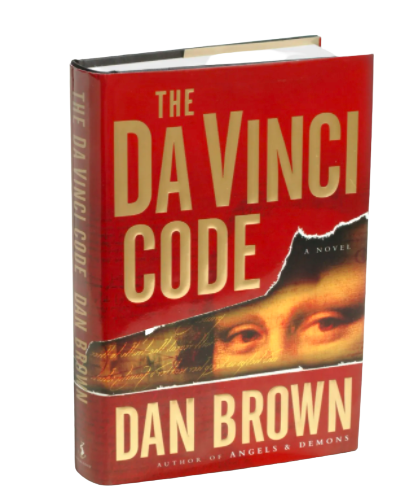
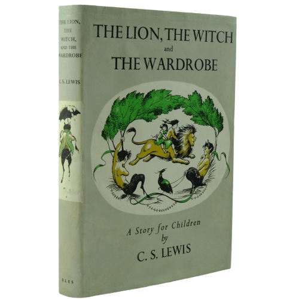
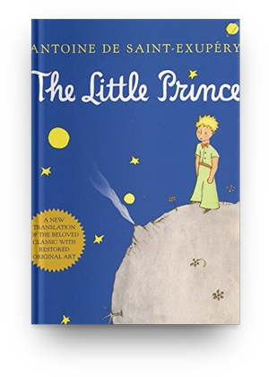

Our Products
The Da Vinci Code
The Da Vinci Code is a 2003 mystery thriller novel by Dan Brown. It is Brown's second novel to include the character Robert Langdon: the first was his 2000 novel Angels & Demons. The Da Vinci Code follows "symbologist" Robert Langdon and cryptologist Sophie Neveu after a murder in the Louvre Museum in Paris causes them to become involved in a battle between the Priory of Sion and Opus Dei over the possibility of Jesus Christ and Mary Magdalene having had a child together.
The Lion, the Witch and the Wardrobe
The Lion, the Witch and the Wardrobe is a fantasy novel for children by C. S. ... Most of the novel is set in Narnia, a land of talking animals and mythical creatures that is ruled by the evil White Witch. In the frame story, four English children are relocated to a large, old country house following a wartime evacuation.
The Little Prince
The story follows a young prince who visits various planets in space, including Earth, and addresses themes of loneliness, friendship, love, and loss. Despite its style as a children's book, The Little Prince makes observations about life, adults and human nature